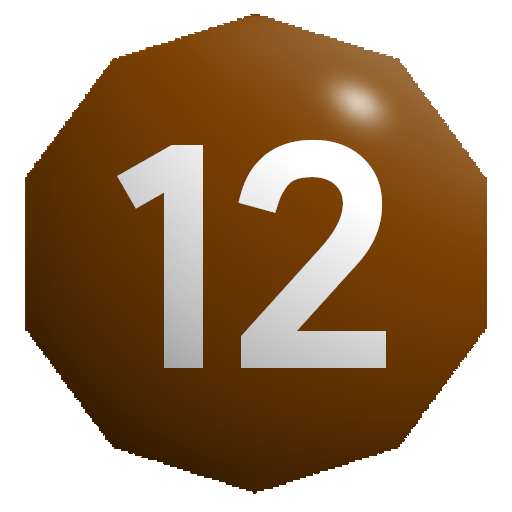
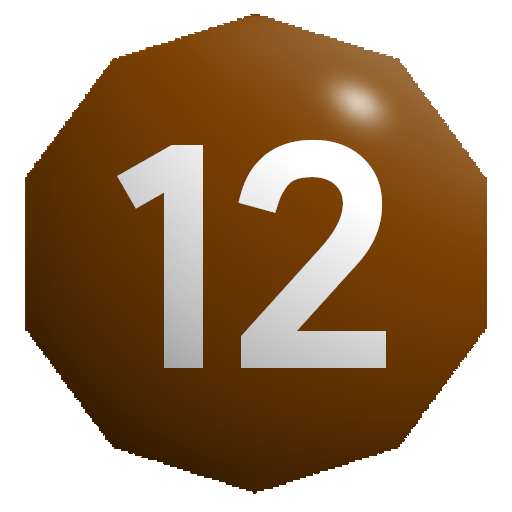

Характеристики
Любое существо описывается четырьмя базовыми характеристиками:
- Телосложение
- Сноровка
- Интеллект
- Мудрость
Характеристика может принимать значение от  до , а изменение её значения возможно только на время.
до , а изменение её значения возможно только на время.
Распределение и зависимость характеристик
По умолчанию у всех серых значение трёх характеристик равно  , и одной
, и одной  в зависимости от
в зависимости от класса. Каждый класс получает увеличенную на один ранг характеристику:
- Воины - Телосложение
- Разбойники - Сноровка
- Маги - Интеллект
- Жрецы - мудрость
Игроки могут изменять базовые характеристики при создании уменьшая ранг отдельных значений и увеличивая за счёт свободных очков другие характеристики. Перераспределение характеристик позволяет создавать совершенно разных персонажей:
Воин силач: Телосложение,
Сноровка,
Интеллект,
Маг учёный:
Интеллект,
Боевой жрец:
Мудрость
Так же, игрок может "пожертвовать" увеличенной костью класса и взять вместо неё один дополнительный ранг навыка, или талант.
Относительные значения
Не смотря на то, что человек с телосложением считается невероятно сильным и выносливым, существо другого типа, например, Дракон с телосложением  обладает на много большей выносливостью и силой относительно человека.
Поэтому, при определении характеристик следует учитывать относительное значение внутри типа существ, а не снаружи.
обладает на много большей выносливостью и силой относительно человека.
Поэтому, при определении характеристик следует учитывать относительное значение внутри типа существ, а не снаружи.
Рассчёт относительного значения
В обычном случае при рассчёте бонусов от характеристик следует учитывать абсолютную шкалу типа существ от  до , где:
до , где:
- - существо самого
слабогоранга, с поделённым на треть общим значением бонусов - - существо
малогоранга с половинным значением бонусов характеристик - - существо
нормальногоранга с обычным значением бонусов - - существо
крупногоранга с удвоенными значениями бонусов - - существо
большогосилы с увеличенными в три раза значениями бонусов характеристик
Состязания
Тип проверки
При состязании существ одинакового типа значение костей считаются абсолютными, если же состязаются существа разного типа, то у существа меньшего типа есть возможность выиграть состязание только при условии, что выпавшее значение будет выше, чем dR+DdR, где R - это кость типа противника, D - разница рангов по модулю.
Чтобы существо меньшего ранга проиграло проверку само, выброшенное значение должно быть меньше чем dR-DdR, в то время как значение противника должно быть больше.
Эти же правила работают для Толпы, применяясь к результату броска.
Например, если Человек (существо нормального типа
20() чтобы победить, при условии, что значение будет больше, чем выпавшее значение Огра. А чтобы Огр сам проиграл состязание, ему нужно выбросить <16().
Таким образом, "чистое" состязание характеристик не может быть выиграно существом меньшего типа, однако при состязаниях навыков это может быть возможным.
Для более удобного рассчёта можете использовать таблицу состязаний